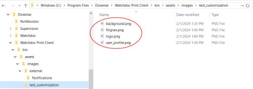
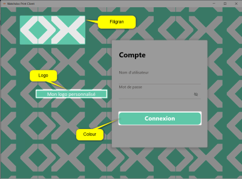
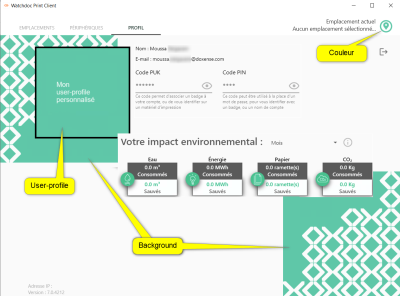
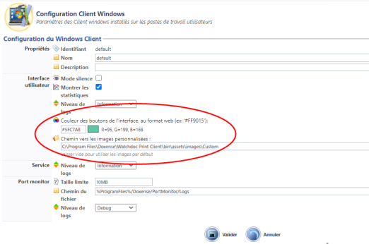

Principe
Tout comme la plupart des WES et WEScan, l'interface graphique de Watchdoc Print Client for Windows peut être personnalisée à l'aide d'images et logo qui vous sont propres.
Procédure
Tester la personnalisation des images
Avant de modifier les images par défaut de WPC for Windows sur le serveur Watchdoc (avec impact sur l'ensemble des postes clients), vous pouvez mener un test de personnalisation depuis un poste client :
-
accédez en tant qu'administrateur à un poste client sur lequel est installé WPC for Windows ;
-
à l'aide de l'explorateur, rendez-vous dans le dossier images de WPC (C:\Program Files\Doxense\Watchdoc Print Client\bin\assets\images\) ;
-
dans ce dossier, créez un dossier test_customization ;
-
dans ce dossier, créez les images personnalisées correspondant aux interfaces WPC for Windows en respectant les dimensions des images d'origine :
-
background.png : 211pt x 232 pt
-
filigran.png : 216 pt x 100.5 pt
-
logo.png : 330 pt x 36.75 pt
-
user_profile.png : 180,5 pt x 164 pt
N.B. : vous pouvez aussi copier le contenu du dossier External qui contient les images par défaut et créer vos images personnalisées à partir de ces modèles.



-
-
lancez WPC for Windows pour vérifier l'affichage des images personnalisées.
-
Retouchez-les si nécessaire.
→ Dès que les images personnalisées sont satisfaisantes, finalisez la personnalisation sur le serveur Watchdoc.
Finaliser la personnalisation des images et de la couleur
Lorsque les images personnalisées sont satisfaisantes, vous pouvez :
-
finaliser la personnalisation des images ;
-
accédez en tant qu'administrateur au serveur maître sur lequel est enregistré Watchdoc ;
-
sur ce serveur rendez-vous dans le dossier contenant les images par défaut : C:\Program Files\Doxense\Watchdoc Print Client\bin\assets\images ;
-
dans ce dossier, créez un dossier dédié aux images personnalisées (par exemple Custom) ;
-
dans le dossier Custom, enregistrez vos images personnalisées contenues dans le dossier test_customization ;
-
accédez en tant qu'administrateur à l'interface d'administration de Watchdoc ;
-
depuis le Menu principal, section Configuration, cliquez sur Configuration avancée ;
-
dans l'interface Configuration avancée, cliquez sur Configuration Client Windows.
-
dans la section Configuration du Windows Client, indiquez le chemin vers le dossier contenant les images personnalisées :
-
personnaliser la couleur des interfaces :
-
indiquez la valeur hexadécimale de la couleur souhaitée : cette couleur s'applique au fil d'Ariane, à l'information de localisation et aux boutons de l'interface ;

-
N.B. : vous pouvez aussi copier/coller le dossier Images et le renommer (Images_Originales, par exemple) pour enregistrer vos images personnalisées dans le dossier Images. Dans ce cas, il n'est pas besoin de remplir le chemin d'accès au dossier des images personnalisées.
Quelle que soit la manière de procéder, nous vous recommandons de conserver les images d'origine. Comme modèles, mais aussi au cas où vous souhaiteriez les réutiliser.
-
Cliquez sur le bouton pour valider la personnalisation de WPC for Windows.
-
Vérifiez dans WPC for Windows que ces images ont bien été prises en compte.